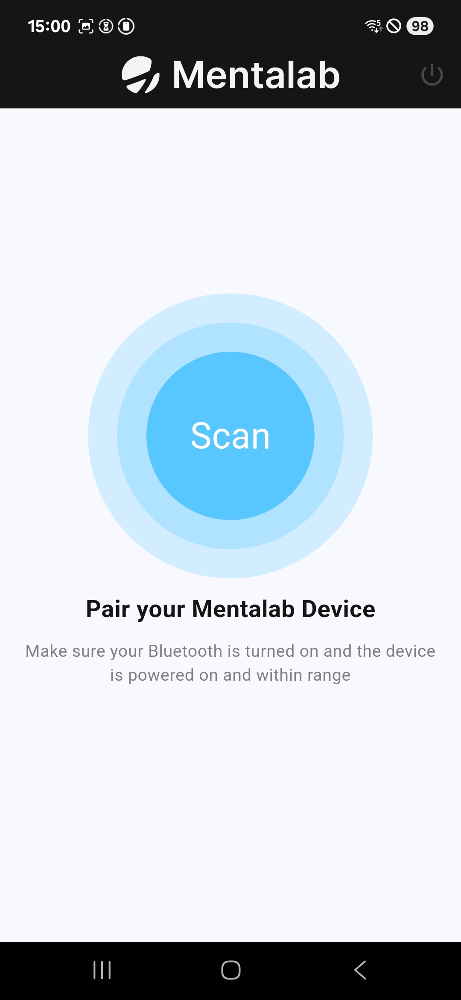
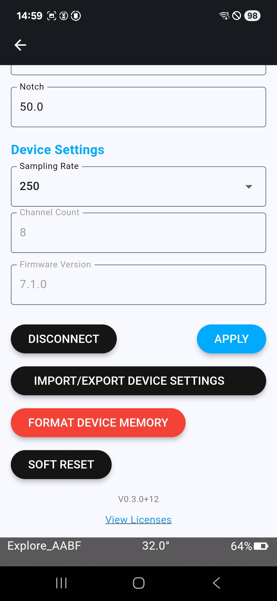

Usage
This page describes how to connect the app to your Explore device and how the app is organized.
App overview
On the homepage, you scan for nearby Explore devices and connect to one.
After you connect, the app shows two tabs. The ExG tab shows live ExG data. From here, you can record data and stream data via LSL. See ExG Visualization. The IMPEDANCE tab shows impedance values and lets you assign electrode positions to channels. See Impedance.
To open the Settings page, tap the gear icon in the top left corner of the ExG tab. See Settings.
The bottom bar shows the status of the connected device.
Connect to a device
-
Turn on your Explore device.
-
Make sure Bluetooth is turned on on your phone.
-
On the homepage, tap Scan.
The app scans for about 4 seconds and lists all nearby devices that have
Explorein their name, for exampleExplore_AAXX. -
Tap CONNECT next to your device.
When the connection is established, the app shows
Connected to <device name>and opens the ExG tab.

The homepage lets you scan for and connect to nearby Explore devices.
If no device is found, the app shows No Devices Found. Check that the device is turned on and within range. Then tap the search icon in the bottom left corner to scan again.
| Channel names that you assigned on the IMPEDANCE tab are reset each time you connect. To restore the channel names and sampling rate from your last session, use Import last session settings on the Settings page. See Import and export device settings. |
| If your device is set to an offline sampling rate, the app opens the Settings page instead of the ExG tab. See Offline sampling rates. |
Disconnect
To disconnect from your device, open Settings and tap DISCONNECT.
If the connection to the device is lost, for example because the device was turned off or is out of range, the app shows the Device Disconnected dialog. Tap OK to return to the homepage.
When the device disconnects, a running recording is stopped and saved, and LSL streaming stops. Recording and LSL streaming do not restart when you reconnect.
Bottom bar
The bottom bar shows the status of the connected device:
-
device name
-
device temperature
-
battery charge

Connection status
If data packets from the device are lost, the app shows an indicator at the top of the screen.
Lost packets are usually caused by a large distance or obstacles between the phone and the device, or by other Bluetooth use on the phone, such as headphones. Keep the phone close to the device, and disconnect other Bluetooth accessories.
Data that is lost while the connection is unstable is missing from recordings and LSL streams made with the app. The device also records to its internal memory, independently of the app.
Screen and background operation
The screen stays on while the app is connected to a device.
Recording and LSL streaming continue when the app runs in the background. On Android, the notification Data streaming active is shown while the app records or streams in the background.
To prevent accidental touches while the app is open, use the lock function on the ExG tab. See Lock the screen.